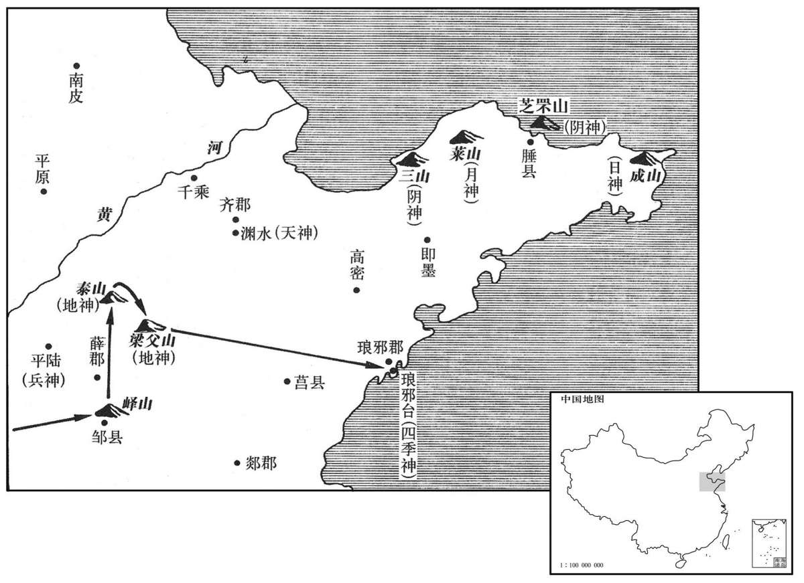

公元前219年资治通鉴：本年记事、原文与白话对照
按原书编年位置阅读；追叙和史论不等于本年发生的事件。白话采用所据译本，缺译不以生成译文补齐。
卷7 · 本年记事
公元前219年 · 始皇帝在位第28年
二十八年〔（壬午、前二一九）〕

本年形势与背景参考图
始皇东行郡、县，上邹峄山，立石颂功业。〔班志：鲁国邹县，峄山在北。应劭曰：邾文公迁于绎，即此。括地志：邹峄山在兖州邹县南二十二里。峄，音亦。〕于是召集鲁儒生七十人，〔孔颖达曰：儒之言优也，柔也，能安人，能服人。又，儒者，濡也，以先王之道能濡其身。〕至泰山下，议封禅。诸儒或曰：“古者封禅，为蒲车，恶伤山之土石、草木；扫地而祭，席用〔【章：十二行本“用”作“因”；乙十一行本同。】〕葅秸。”议各乖异。始皇以其难施用，由此绌儒生。〔括地志：泰山在兖州博城县西北三十里，一曰岱宗。服虔曰：封者，增山之高；禅，广地也。张晏曰：天高不可及，于泰山上立封禅以祭之，冀近神灵也。项威曰：封泰山，告太平，升中和之气于天。祭土为封，谓负土于泰山为坛而祭也。除地为墠；后改“墠”为“禅”。晋太康地记曰：为坛于泰山以祭天，示增高也；为墠于梁父以祭地，示广也。白虎通曰：王者易姓而起，必升封于泰山之上者何？因高告高，顺其类，故升封者增高也。下禅梁父之基，广厚也。刻石纪号者，着己之功以自劝也。增太山之高以报天，附梁父之基以报地。恶，乌路翻。师古曰：蒲车，以蒲裹轮。“葅秸”，班志作“苴秸”。如淳曰：苴，读如租；秸；读曰戛。晋灼曰：苴，藉也；师古曰：茅藉也。“苴”，本作“葅”，假借用。应劭曰：秸，藁本，去皮以为席。绌，与黜同，黜退也。〕而遂除车道，上自太山阳至颠，立石颂德；从阴道下，禅于梁父。〔师古曰：山南曰阳，山北曰阴。班志，泰山郡有梁父县。师古注曰：以山名县。括地志：梁父山在兖州泗水县北八十里。父，音甫。〕其礼颇采太祝之祀雍上帝所用，〔班表：奉常之属有雍太祝令、丞，盖汉仍秦制也。秦作畤于雍以祀上帝，今采其礼以为封禅礼。〕而封藏皆秘之，世不得而记也。
始皇帝出巡东部各郡、县，登上邹地的峄山，树立石碑赞颂秦朝的功勋业绩。召集过去鲁地崇信儒学的文人七十名，到泰山下商议祭祀天地的封禅之事。诸儒生中有的说：“古时候的君王封禅，用蒲草裹住车轮，不愿伤害山上的土石草木；扫地祭祀时所使用的席都是用草编成的。”各人的议论很不相同。始皇帝认为众人所说的很难实际采用，便因此而贬退儒生；并且下令开通车道，从泰山南麓上到顶峰，竖立石碑歌颂自己的功德，又从泰山北面顺道而下，到梁父山祭地。祭祀仪式颇采用秦国古时在雍城由太祝令主持的祭祀上帝的形式。而怎样封土埋藏却全都保密，世人无法获悉并记录下来。
于是始皇遂东游海上，行礼祠名山、大川及八神。〔封禅书：八神：一曰天主，祠天齐渊水；二曰地主，祠太山、梁父；三日兵主，祠蚩尤；四曰阴主，祠三山；五曰阳主，祠之罘山；六曰月主，祠之莱山；七曰日主，祠成山；八曰四时主，祠琅邪。或曰：八神，齐自太公以来祠之。〕始皇南登琅邪，大乐之，留三月，作琅邪台，立石颂德，明得意。〔班志，琅邪郡有琅邪县。山海经：琅邪台在勃海间，琅邪之东。郭璞曰：琅邪临海边，有山曰琅邪台。越王句践徙琅邪，作观台以望东海。史记曰：始皇徙三万家于台下。是其所作因越之旧也。括地志：琅邪山在密州诸城县东南百四十里；始皇立层台于山上，谓之琅邪台。邪，音耶。大乐之，乐琅邪之风景也。乐，音洛。〕
始皇帝随即又向东出游沿海各地，祭礼名山大川及天、地、兵、阴、阳、月、日、四时八神。然后南登琅邪山，兴致勃勃，在那里逗留了三个月，还建造琅邪台，立石碑颂德，表明自己得天下之意。
初，燕人宋毋忌、羡门子高之徒称有仙道、形解〔佳买翻。〕销化之术，燕、齐迂怪之士皆争传习之。〔道经：月中仙人宋毋忌。白泽图云：火之精曰宋毋忌。盖其人火仙也。张曰：羡门子高，仙人，居碣石山上。服虔曰：形解，尸解也。张晏曰：人老而解去，故骨如变化也。今山中有龙骨，世谓之龙解骨化去。迂，羽俱翻。又忧俱翻。〕自齐威王、宣王、燕昭王皆信其言，使人入海求蓬莱、方丈、瀛洲，云此三神山在勃海中，去人不远。患且至，则风引船去。尝有至者，诸仙人及不死之药皆在焉。及始皇至海上，诸方士齐人徐市等争上书言之，〔太史公曰：嬴姓分封者为徐氏。姓谱曰：皋陶子伯益佐禹有功，封其子若木于徐。〕请得齐戒与童男女求之。〔齐戒之齐，读曰斋。〕于是遣徐市发童男女数千人入海求之。船交海中，皆以风为解，〔师古曰：自解说云“为风不得而至”。自解，犹今言分疏。〕曰：“未能至，望见之焉。”
当初，燕国人宋毋忌、羡门子高一类人声称世上有一种成仙之道、人老死后尸解骨化升天的法术，燕国、齐国的迂腐、怪异之士都争相传授和学习。从齐威王、宣王到燕昭王都相信他们的话，派人到海上寻求蓬莱、方丈、瀛洲三座神山，据说这三仙山在渤海之中，距离人间并不遥远。只是凡人将要到达，凡就把船吹走了。不过也曾有人到过这三山，看见各位神仙和长生不死的药均在那里。待到始皇帝出游海滨时，通晓神仙方术的人如故齐国人徐等纷纷争着上书谈这些事，请求准许斋戒清心洁身素食后率领童男童女往海上寻求神山。始皇于是派遣徐征发数千名童男女入海求仙。但是，船行海上后却均因风势不顺而返航。不过他们仍然说：“虽没能到达仙山，可是已经望见了。”
始皇还，过彭城，〔班志，楚国有彭城县，古彭祖国。〕斋戒祷祠，欲出周鼎泗水，〔水经：泗水出鲁国卞县北山，东南过彭城县，又东过下邳县入淮。时人相传以为宋太丘社亡而周鼎没于泗水中，故祠泗水，欲出周鼎。〕使千人没水求之，弗得。乃西南渡淮水，〔水经：淮水出南阳郡平氏县桐柏山，东南至淮陵入海，行三千余里。〕之衡山、南郡。〔班志，衡山在长沙国湘南县之东南。括地志：衡山，一名岣嵝山，在衡州湘潭县西四十一里。汉衡山国在江北；秦拔楚郢，置南郡；唐为荆州江陵府。之，往也。〕浮江至湘山祠，逢大风，几不能渡。〔几，居依翻。〕上问博士曰：“湘君何神？”对曰：“闻之：尧女，舜之妻，葬此。”〔班志：湘水出零陵郡零陵县阳朔山，北至酃入江。括地志：黄陵庙在岳州湘阴县北五十七里，舜二妃之神。二妃冢在湘阴县一百六十里青草山上。盛弘之荆州记：青草湖，南有青草山，湖因山而名。舜陟方死于苍梧，二妃死于江、湘之间，因葬焉。博士以儒学为官。汉成帝诏曰：儒林之官，四海渊源。宜皆明于古今，温故知新，通达国体，故谓之博士。〕始皇大怒，使刑徒三千人皆伐湘山树，赭其山。〔赭，音者，赤也。〕遂自南郡由武关归。
始皇帝还归咸阳途中经过彭城，举行斋戒，祈祷祭祀，想要打捞沉没在泗水中的周鼎。故而遣一千人潜入泗水寻找，结果毫无所得。于是，始皇又向西南渡过淮水，到达衡山、南郡；再泛舟长江，抵湘山，祭祀湘君。适逢大风，几乎不能渡过湘水。始皇问博士道：“湘君是什么神仙啊？”博士回答：“听说她是尧帝的女儿，舜帝的妻子，死后就葬在这里。”始皇大怒，令三千名被判刑服劳役的罪犯将湘山的树木砍伐殆尽，裸露出赤红的土壤和石块。然后从南郡经武关返回咸阳。
初，韩人张良，其父、祖以上五世相韩。〔张良大父开地，相韩昭侯、宣惠王、襄哀王，父平，相厘王、悼惠王，凡五世。〕及韩亡，良散千金之产，欲为韩报仇。〔为，于伪翻。〕
早先，韩国人张良的父亲、祖父曾经做过五代韩相。乃至韩国灭亡，张良尽散千金家产，想要为韩国报仇。